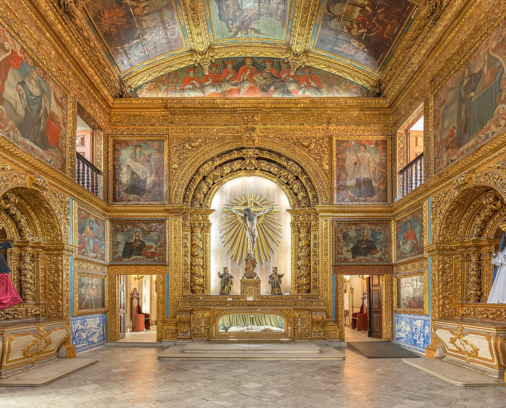
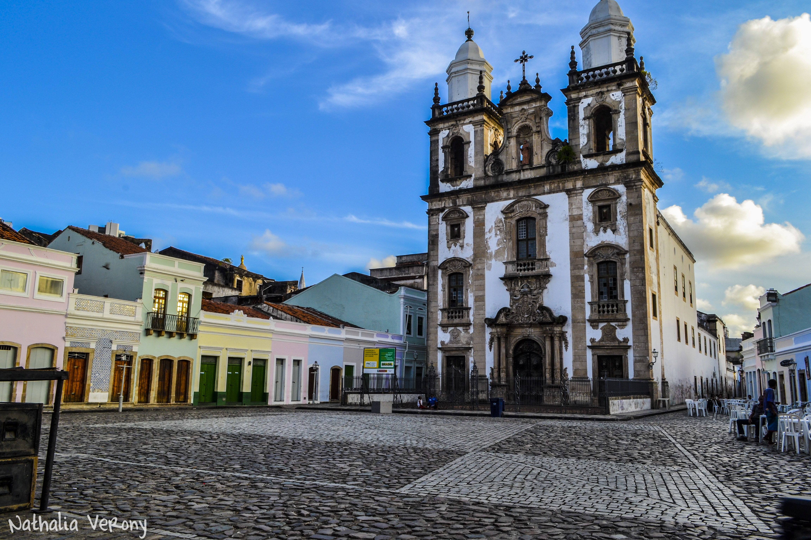

A Capela dos Noviços da Ordem Terceira de São Francisco de Assis ou Capela Dourada é uma capela da Ordem Franciscana localizada na cidade do Recife, capital do estado brasileiro de Pernambuco. Com construção iniciada em 1696, foi o primeiro templo do Brasil a ser integralmente coberto de decoração barroca. Está situada dentro do complexo de edifícios do Convento e Igreja de Santo Antônio, que inclui a Igreja da Ordem Terceira de São Francisco e o Museu Franciscano de Arte Sacra.
Rodeado por casas coloniais e pela Catedral de São Pedro dos Clérigos, o Centro do Recife abriga um dos principais redutos culturais da Cidade, o Pátio de São Pedro. Com um traçado das pedras irregulares, o local é um dos poucos no Brasil que ainda remete ao período colonial e tem a imponente Catedral tombada pelo Instituto do Patrimônio Histórico e Artístico Nacional (IPHAN). Uma das principais características é ser uma área simbólica e afetiva. O Pátio é cercado ainda por ateliês, museus, bares e restaurantes que ocupam os sobrados, permitindo uma movimentação musical, cultural e da boemia todos os dias da semana.
